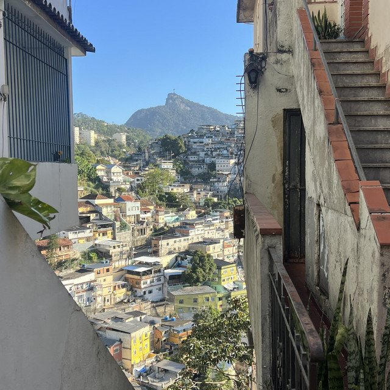

The Eclectic Polymath Podcast · Archive
#159 Santa Teresa: Rio’s Hilltop Bohemia and the Fight to Preserve It

About this episode
High above Rio de Janeiro’s beaches and modern towers, Santa Teresa feels like a neighborhood that escaped the normal development cycle. Its winding streets, old mansions, historic tram, lush hillsides, and artistic culture have made it one of the city’s most distinctive places. But how did this unusual neighborhood come to exist, and what has allowed so much of its character to survive?
This episode traces Santa Teresa’s evolution from a nineteenth-century hillside retreat into a neighborhood shaped by artists, intellectuals, longtime residents, and a remarkably diverse cultural ecosystem. We explore how geography influenced its architecture, why its narrow roads and historic buildings resisted certain forms of development, and how the neighborhood’s relationship with Centro, Lapa, and the surrounding favelas helped create its particular identity.
Key points
- High above Rio de Janeiro’s beaches and modern towers, Santa Teresa feels like a neighborhood that escaped the normal development cycle.
- This episode traces Santa Teresa’s evolution from a nineteenth-century hillside retreat into a neighborhood shaped by artists, intellectuals, longtime residents, and a remarkably diverse cultural ecosystem.
- We explore how geography influenced its architecture, why its narrow roads and historic buildings resisted certain forms of development, and how the neighborhood’s relationship with Centro, Lapa, and the surrounding favelas helped create its particular identity.
- We also look at the pressures shaping Santa Teresa’s future
- tourism, rising property values, infrastructure challenges, preservation rules, and the possibility of a gentrification cycle familiar from Brooklyn, Lisbon, and other creative neighborhoods.